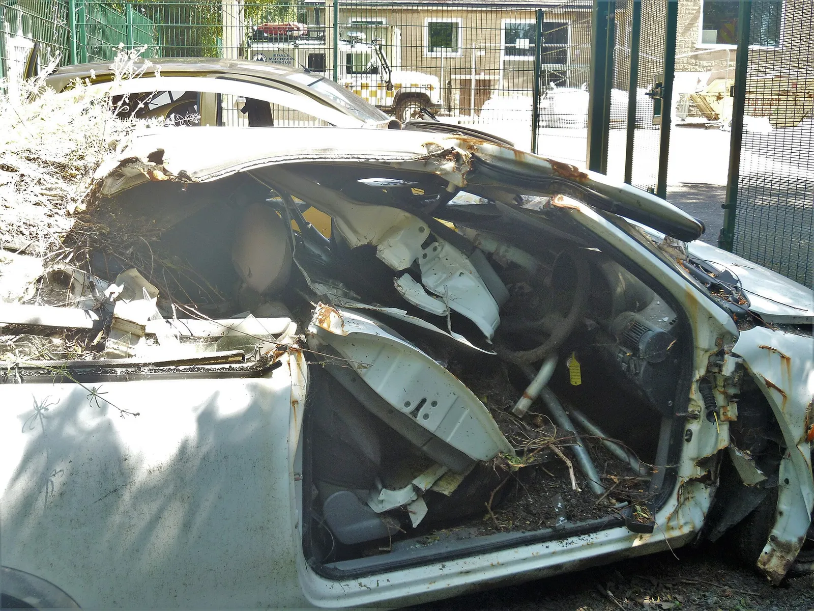
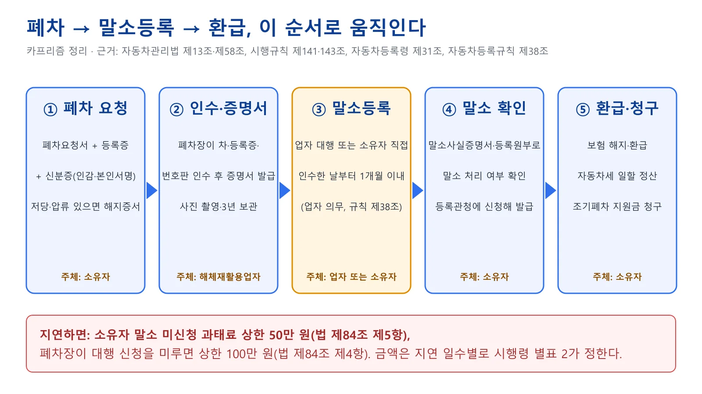
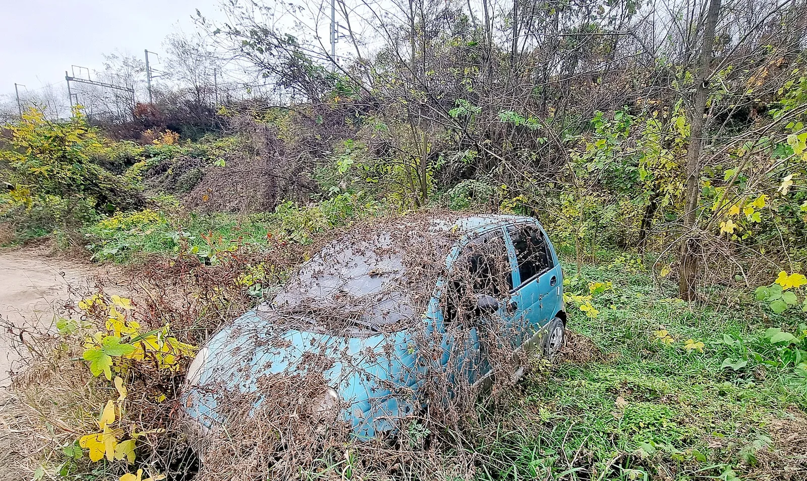
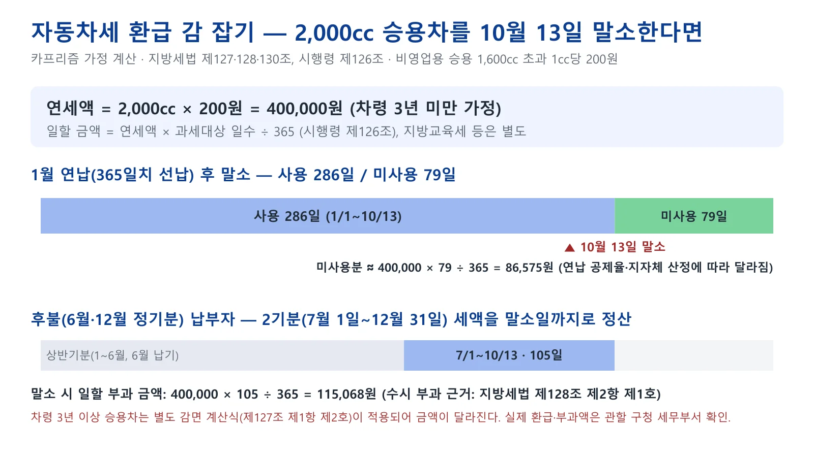
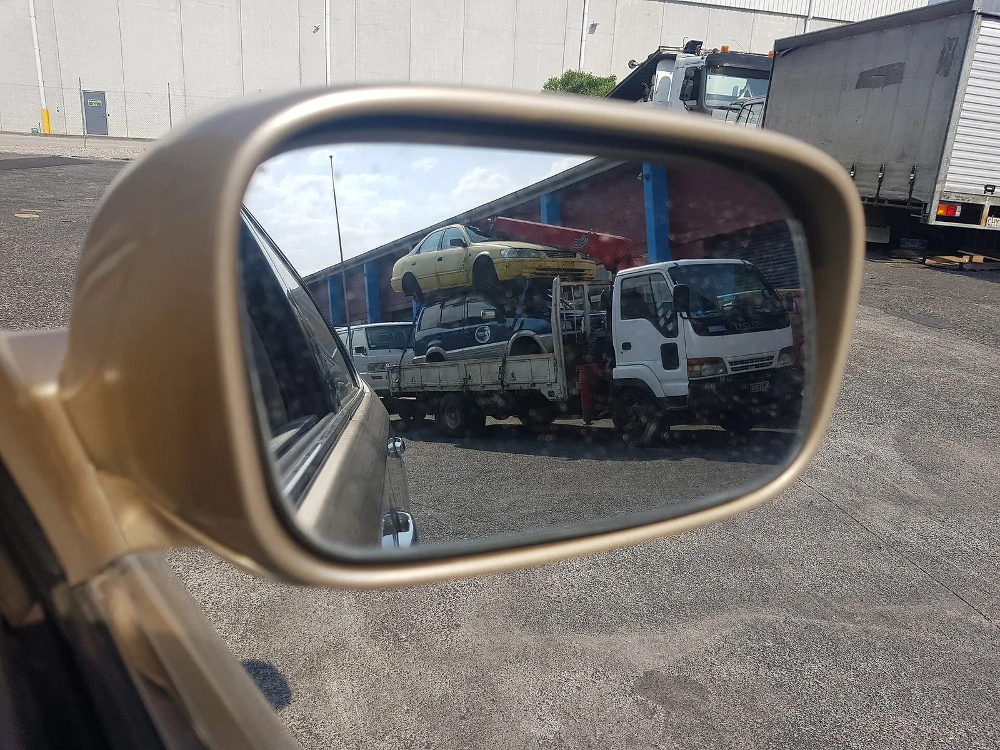
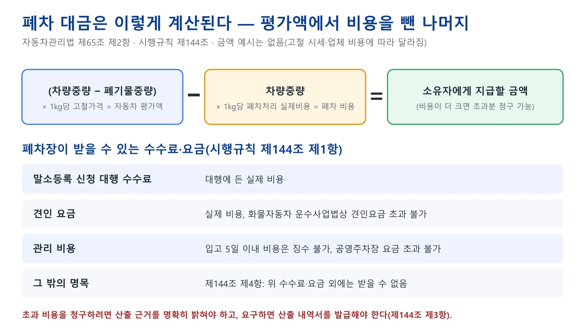
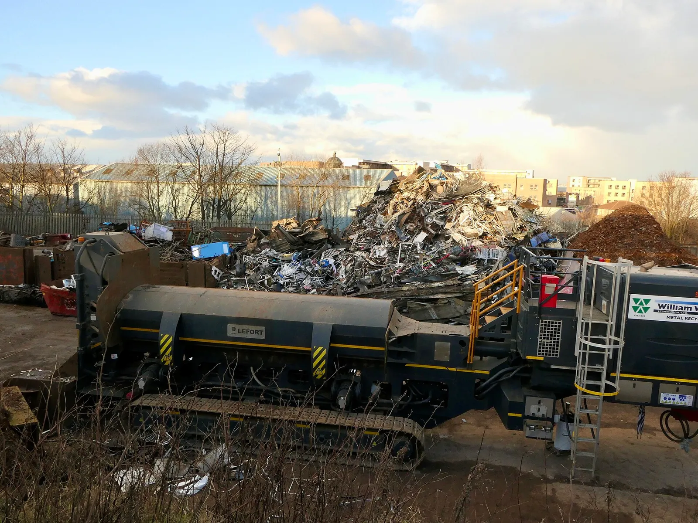
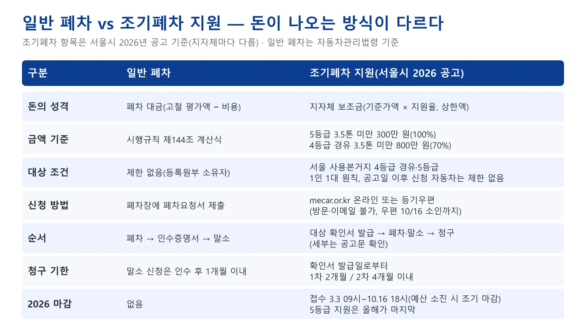
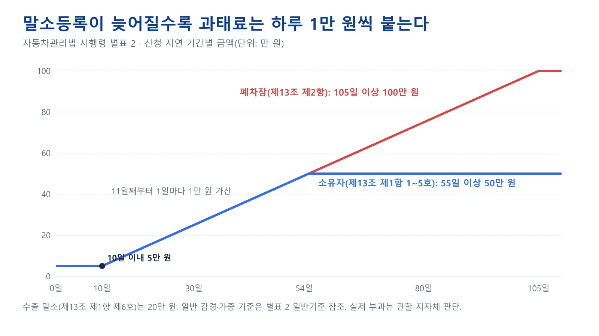

▲ 심하게 파손된 승용차. 천재지변·교통사고·화재로 자동차 본래의 기능을 회복할 수 없게 되면 말소등록 사유가 된다(법 제13조 제1항 제5호) ⓒ Michael Dibb, geograph / Wikimedia Commons (CC BY-SA 2.0)
"폐차장에 넘기면 끝일까?" 차를 폐차장에 맡기고 돌아서는 순간 모든 게 끝난 것 같지만, 법적으로 차가 사라지는 시점은 폐차장 문을 나설 때가 아니라 등록원부에서 말소등록이 되는 때다. 이 글은 2026년 10월 10일 국가법령정보센터 Open API에서 자동차관리법(시행 2026.10.2), 같은 법 시행규칙(2026.10.2), 시행령(2026.6.3), 자동차등록령·자동차등록규칙(2026.6.3), 지방세법(2026.1.1)·시행령(2026.10.1)의 현행 원문을 내려받아 조문과 금액을 직접 대조했고, 국토교통부 폐차 Q&A, 서울시 2026년 조기폐차 공고, 서울시 ETAX FAQ로 실무 절차를 확인했다. 보험 해지 요령은 양도·폐차 보험 해지 기사, 조기폐차 신청 순서는 조기폐차 지원 기사, 명의이전은 명의이전 비용·기한 기사에서 다뤘으므로, 여기서는 말소등록의 법적 구조, 서류, 압류·저당 차량 처리, 폐차장 고르기, 말소 기한과 과태료에 집중한다. 확인하지 못한 항목은 "확인하지 못했다"고 적었고, 블로그·커뮤니티 정보는 쓰지 않았다.
1. 폐차와 말소등록은 다른 일이다 — 법이 정한 구조
자동차관리법 제13조 제1항은 소유자가 일정한 사유에 해당하면 등록증·번호판을 반납하고 말소등록을 신청해야 한다고 정하고, 그 첫 번째 사유가 "자동차해체재활용업자에게 폐차를 요청한 경우"다. 같은 조 제2항은 이 경우 폐차장(자동차해체재활용업자)이 소유자를 갈음해 말소등록을 신청하도록 하되, 소유자가 직접 신청하는 것도 허용한다(국토교통부령이 정하는 바에 따라). 국토교통부 폐차 Q&A는 절차를 폐차 신청 → 폐차장 입고 → 폐차인수증명서 발급 → 말소등록 신청(차주 또는 폐차장 대행) → 말소등록 완료로 안내한다. 흔히 "자진말소"라고 부르는 용어는 이번에 확인한 조문에는 없었다. 법령은 어디까지나 '말소등록'이고, 폐차를 거치지 않는 사유(수출, 천재지변·교통사고·화재 멸실 등)까지 모두 같은 조문에 담겨 있다.

▲ 폐차에서 환급까지 다섯 단계와 각 단계의 주체, 근거 조문(카프리즘 제작 도표) ⓒ 카프리즘
| 사유 | 누가 신청하나 | 메모 |
|---|---|---|
| 폐차 요청(제1호) | 폐차장이 갈음 신청, 소유자 직접 신청 가능(제2항) | 폐차인수증명서가 말소 서류의 핵심(규칙 제37조) |
| 반품(제2호) | 소유자 | 제작·판매자 발행 자동차반품확인서 첨부 |
| 여객·화물 차령 초과·면허 실효(제3·4호) | 소유자 | 사업용 차량에 해당, 행정처분서 사본 등 |
| 천재지변·교통사고·화재로 기능 회복 불가·멸실(제5호) | 소유자 | 사고사실증명서류 첨부, 이 경우 번호판 반납을 면할 수 있다(령 제31조 제1항 제1호) |
| 수출(제6호) | 수출하는 자가 갈음 신청 | 말소일부터 1년 이내 수출 이행 신고(령 제32조), 미이행 시 폐차 요청 또는 신규등록 |
| 압류 후 환가가치 없음(제7호) | 소유자(신청할 수 있음) | 승용 차령 11년 이상 등 기준(령 제31조 제2항) |
| 교육·연구 등(제8호) | 소유자(신청할 수 있음) | 시행령에서 정한 특수 사유 |
| 공동소유자 일부의 폐차 요청(제9호) | 공동소유자 1인 또는 수인 | 2025.12.2 공포·2026.6.3 시행으로 신설, 소재불명 등 요건과 환가가치 없음 요건(령 제31조 제7항: 승용 차령 11년 이상 등)이 모두 필요 |
| 도난·횡령·편취(제7항) | 소유자(신청할 수 있음) | 경찰서 도난신고확인서·사건사고사실확인원 첨부(령 제31조 제8항) |
말소등록 사유 조문은 국가법령정보센터에서 볼 수 있다. 자동차관리법 바로가기 말소된 번호가 곧바로 다시 나오지는 않는다. 자동차등록령 제21조 제2항은 말소등록된 자동차의 등록번호를 번호판이 회수되고 말소된 날부터 6개월이 지나기 전에는 다시 사용할 수 없다고 정한다(운수사업용 예외 있음). 폐차 뒤 같은 번호를 새 차에 달고 싶다면 이 기간을 고려해야 한다.
2. 폐차·말소에 필요한 서류 — 폐차장에 내는 것과 등록관청에 내는 것
폐차 요청 서류는 시행규칙 제141조, 말소등록 서류는 자동차등록규칙 제37조에 각각 나와 있다. 소유자는 폐차장에 자동차폐차요청서(별지 제93호서식)와 아래 서류를 내고 폐차 대상 자동차를 제시해야 한다. 말소등록 단계의 서류는 폐차장이 대행하면 폐차장이 챙기고, 소유자가 직접 하면 소유자가 챙긴다. 등록규칙 제37조 제1항은 등록관청이 전산 시스템과 행정정보 공동이용으로 등록원부·폐차인수증명서·사용본거지확인정보를 확인하도록 하고, 확인할 수 없거나 신청인이 동의하지 않을 때만 해당 서류를 첨부하게 한다.
| 서류 | 내용 | 생략·갈음 |
|---|---|---|
| 자동차폐차요청서 | 별지 제93호서식 | 없음 |
| 자동차등록증 | 소유자 보관본 | 폐차장이 인수 |
| 자동차등록원부등본 | 폐차 요청일 전 3일 이내 발급분 | 폐차장이 전산으로 저당·압류 등 이해관계인이 없음을 확인하면 제외 |
| 소유자 확인 서류 | 인감증명서 또는 본인서명사실확인서(상속인·재산관리인이면 그 자격 증명 서류) | 소유자가 직접 요청하면 주민등록증·운전면허증·여권 제시로 갈음 |
| 저당권·압류등록 해지증서 | 권리자의 인감증명서 또는 본인서명사실확인서 포함(해당 차량만) | 등록관청이 폐차의뢰서를 제출한 경우 제외 |
| 서류 | 언제 필요한가 |
|---|---|
| 별지 제17호서식 자동차말소등록신청서 | 항상(폐차장은 폐차사실 통보서로 갈음 가능) |
| 자동차등록증·등록번호판 | 폐차장이 인수한 경우는 제외 |
| 별지 제18호서식 폐차인수증명서 | 자동차의 용도를 폐지한 경우, 천재지변·교통사고·화재로 기능을 회복할 수 없게 된 경우 |
| 등록원부상 이해관계인의 승낙서 또는 확정판결 등 집행력 있는 정본 | 이해관계인(저당권자 등)이 있을 때(법 제13조 제1항 제5호·제7호 사유는 제외) |
| 위임장·위임한 자의 신분증명서 사본 | 대리인이 신청할 때(법인은 법인인감증명서) |
폐차인수증명서는 폐차장이 차를 인수하는 날 소유자에게 발급해야 하는 서류다. 시행규칙 제143조 제1항은 폐차 요청을 받은 폐차장이 등록한 사업장에서 자동차를 인수하고 소유자에게 폐차인수증명서를 발급하도록 하고, 같은 조 제3항은 인수할 때 등록번호판이 나오게 앞뒷면 전체 사진을 찍어 3년간 보관하도록 정한다. 법 제58조 제6항 제1호는 폐차 요청 사실을 증명하는 서류를 발급하도록 의무를 정하고, 발급을 거부하거나 거짓으로 발급하면 제80조 제8호에 따라 2년 이하 징역 또는 2천만 원 이하 벌금 대상이다. 인수한 차를 수출하는 경우 외에는 실제로 폐차해야 하고(제58조 제6항 제1호의2), 어기면 같은 조 제8호의2로 같은 형이다. 말소가 끝난 뒤 이해관계인이 발급받는 말소사실증명서는 제13조 제9항과 시행규칙 제40조가 근거다. 이 증명서를 어디서, 얼마에 발급받는지(온라인 발급 포함)는 이번 확인 범위에서 찾지 못했다.
3. 압류·저당이 걸린 차, 명의가 남의 앞으로 된 차는 이렇게 다룬다
저당권이 설정됐거나 압류등록이 된 차는 폐차장이 폐차를 해서는 안 된다. 시행규칙 제142조 제1항 제1호는 이 경우를 폐차 금지 대상으로 정하되, 이해관계인이 해지증서에 인감증명서를 첨부해 제출했거나 자동차 등록관청이 폐차의뢰서를 제출한 경우는 예외로 한다. 같은 항 제2호는 차대번호 등 등록사항이 등록원부와 다른 경우도 폐차 금지 대상으로 정한다. 제142조 제2항은 이런 금지 사유가 없다면 폐차장이 폐차 요청을 거부해서는 안 된다고 정한다.
| 상황 | 원칙 | 풀 수 있는 방법과 근거 |
|---|---|---|
| 저당권(할부·담보대출)이 남아 있음 | 폐차 금지(규칙 제142조 제1항 제1호) | 저당권자의 해지증서와 인감증명서를 폐차장에 제출(규칙 제141조 제1항 제4호). 말소 때는 이해관계인 승낙서(등록규칙 제37조 제1항 제10호) |
| 세금·과태료 체납 압류가 남아 있음 | 폐차 금지 | 압류 기관의 해지증서 또는 등록관청의 폐차의뢰서. 체납 정리는 과태료 체납·영치·압류 기사 참고 |
| 압류 후 후속 강제집행이 없고 환가가치도 없음 | 소유자가 말소등록을 신청할 수 있음(법 제13조 제1항 제7호) | 승용차는 차령 11년 이상 등 기준(령 제31조 제2항). 등록관청이 압류 촉탁 기관·이해관계인에게 알리고 1개월 이내 기간을 정해 권리 행사가 없으면 폐차 통보 후 말소(령 제31조 제3·4항) |
| 등록원부상 명의가 아직 전 소유자 앞(이전등록 미이행) | 폐차 요청은 등록원부상 소유자가 해야 함 | 양수인이 이전등록을 먼저 해야 한다. 이전등록 신청은 법 제12조 제1항 의무이고, 정당한 사유 없이 신청하지 않으면 법 제80조 제1호(2년 이하 징역 또는 2천만 원 이하 벌금) 대상이다 — 기한·비용은 명의이전 기사 |
| 공동명의 중 한 명이 연락두절 | 원칙은 전원 동의 | 2025.12.2 공포·2026.6.3 시행(제13조 제1항 제9호·제12항): 동의한 공동소유자 지분 합 50% 이상, 공시(14일 이상, 령 제31조 제11항) 후 90일 이내 이의 없음 등의 요건, 폐차 후 남은 금액은 지분별로 지급하거나 공탁 |
| 상속받은 차 | 상속인이 소유자로서 신청 | 말소 기한은 상속개시일이 속한 달의 말일부터 6개월(령 제31조 제1항), 상속인임을 증명하는 서류 필요(규칙 제141조) |

▲ 풀에 파묻혀 방치된 소형 승용차. 도로·남의 땅에 차를 계속 두면 지자체가 폐차 요청 등 처분을 할 수 있다(법 제26조) ⓒ Dmddo, Wikimedia Commons (CC0)
폐차 뒤에 남은 문제가 하나 더 있다. 말소등록된 차를 다시 도로에 내보내려면 신규등록을 해야 하고, 말소 당시 저당권 등이 설정돼 있었다면 그 권리관계가 소멸됐음을 증명해야 한다(법 제13조 제10항). 폐차 처리가 끝난 차는 사실상 되돌릴 수 없다고 보는 편이 안전하다.
4. 환급은 언제 어떻게 — 자동차세, 보험료, 폐차 대금
돈이 되돌아오는 길은 세 갈래이고 시점이 모두 다르다. 자동차세는 말소등록일이 기준이고, 보험은 말소 확인 뒤 해지 접수가 기준이며, 폐차 대금은 폐차장이 차를 인수한 뒤 정산한다.
| 항목 | 기준 시점 | 근거와 방식 | 주의 |
|---|---|---|---|
| 자동차세 | 말소등록일 | 지방세법 제128조 제2항·제5항, 제130조 제1항: 말소 때 해당 기분 세액을 일할 계산(시행령 제126조: 연세액 × 과세 일수 ÷ 연 일수). 계산액이 2,000원 미만이면 징수하지 않는다(제130조 제4항) | 연납했다면 미사용 기간을 환급받을 수 있다고 서울시 ETAX FAQ가 안내한다. 신청이 없어도 지자체가 직권 처리할 수 있다고 안내하나 방식은 지자체별로 확인 |
| 자동차 보험료 | 말소 확인 후 해지 접수일 | 의무보험 해지·환급 요건과 순서는 보험 해지 기사에서 정리 | 폐차 인수만 했고 말소가 안 끝났다면 보험사에 가능 시점을 먼저 확인 |
| 폐차 대금 | 폐차장이 차를 인수한 때 | 법 제65조 제2항: 평가액에서 폐차 비용을 뺀 금액을 소유자에게 지급 | 비용이 평가액보다 크면 초과 비용을 징수할 수 있으나 산출 근거 제시 의무(규칙 제144조 제3항) |

▲ 자동차세 일할 계산 예시(카프리즘 가정 계산). 연세액 400,000원 기준, 실제 금액은 차령 감면·지방교육세·지자체 고지에 따라 달라진다 ⓒ 카프리즘
위 도표의 숫자는 이렇게 나왔다. 지방세법 제127조 제1항은 비영업용 승용차의 1cc당 세액을 1,600cc 이하 140원, 1,600cc 초과 200원으로 정한다. 2,000cc 차의 연세액은 2,000 × 200 = 400,000원이다(차령 3년 미만 가정). 10월 13일에 말소한다고 하면 1월 1일부터 말소일까지 286일을 쓴 셈이라 1월에 연납한 경우 미사용 기간은 79일(약 86,575원)이고, 후불로 내는 사람은 2기분 가운데 7월 1일부터 10월 13일까지 105일분인 약 115,068원이 말소 때 수시 부과된다(말소일을 하루 포함하느냐에 따라 1일 차이가 날 수 있다). 차령 3년 이상 승용차는 제127조 제1항 제2호의 별도 계산식이 적용되고, 지방교육세 등은 따로 붙으므로 실제 고지서와 다를 수 있다. 세액 계산 규정은 국가법령정보센터에서 볼 수 있다. 지방세법 바로가기
보험료는 같은 날 말소해도 해지를 접수하는 날이 늦으면 환급이 줄어든다. 기존 기사의 가정 계산(연 보험료 80만 원 일시납, 해지 접수 시점 기준)이 그 구조를 보여 준다. 자동차세는 말소일 기준으로 자동 정산되는 쪽에 가깝고, 보험은 소유자가 해지를 접수해야 환급이 시작된다는 점이 다르다.
5. 폐차장 고를 때 속지 않는 법 — 등록 확인, 대금 구조, 수수료 상한
폐차는 시장·군수·구청장에게 등록한 자동차해체재활용업자만 할 수 있다. 법 제53조 제1항은 자동차관리사업(해체재활용업 포함)을 하려는 자가 등록하도록 하고, 등록 없이 사업을 하면 제79조 제13호에 따라 3년 이하 징역 또는 3천만 원 이하 벌금이다. 국토교통부 Q&A는 무등록 업체에 폐차를 맡기면 폐차인수증명서를 받지 못하거나 불법 폐차·대포차로 악용되는 사례가 있다고 경고한다. 자동차365는 국토교통부와 한국교통안전공단이 운영하는 자동차 전자정부 누리집이고, 메뉴에 '폐차안내 > 폐차정보 및 안내'가 있다. 다만 폐차장 조회가 구체적으로 어느 메뉴인지는 접속 환경에서 확인하지 못했고, 관할 시·군·구 차량등록 부서에 등록 여부를 문의하는 방법도 쓸 수 있다. 자동차365 바로가기

▲ 사이드미러에 비친 폐차 이송 트럭. 차를 인수해 가는 업체가 등록 사업장에서 인수·폐차하는지 확인해야 한다(시행규칙 제143조 제1항) ⓒ Dev Ncp, Wikimedia Commons (CC BY 4.0)
| 확인 항목 | 근거 | 이렇게 확인한다 |
|---|---|---|
| 관할 시·군·구에 등록된 사업장인가 | 법 제53조 제1항 | 업체 등록증·사업장 소재지 확인, 무등록은 제79조 제13호 처벌 대상 |
| 등록한 사업장 안에서 인수하는가 | 시행규칙 제143조 제1항, 법 제66조 제1항 제14호 나목(등록 사업장 외 폐차 시 등록취소·영업정지 사유) | 차를 사업장 밖에서 먼저 받아 가는 곳은 주의 |
| 인수 때 인수증명서를 주는가 | 법 제58조 제6항 제1호, 규칙 제143조 | 발급을 거부·허위 발급하면 형사처벌(제80조 제8호, 2년 이하 징역 또는 2천만 원 이하 벌금) |
| 번호판·등록증을 폐기하는가 | 법 제58조 제6항 제2호 | 다시 사용할 수 없는 상태로 폐기 의무, 위반 시 제80조 제9호 |
| 인수한 차를 실제로 폐차하는가 | 법 제58조 제6항 제1호의2 | 수출 등 예외를 빼면 폐차해야 하며, 어기면 제80조 제8호의2(2년 이하 징역 또는 2천만 원 이하 벌금)와 제66조 제1항 제14호 라목 사유 |
| 인수 사진을 남기는가 | 규칙 제143조 제3항 | 번호판이 보이는 앞·뒷면 전체 사진 3년 보관 |
| 말소 대행을 해 주는가 | 규칙 제144조 제1항 제1호 | 요구하면 실제 비용만 받고 대행(국토교통부 Q&A: 소유자가 요구하면 의무 대행) |
폐차 대금은 "시세가 업체마다 다르다"로 끝나는 이야기가 아니라, 계산 구조가 정해져 있다. 시행규칙 제144조 제2항은 자동차의 평가액을 "차량중량에서 폐기물중량을 뺀 중량에 1킬로그램당 고철가격을 곱한 금액"으로, 폐차에 드는 비용을 "차량중량에 1킬로그램당 폐차처리에 소요되는 실제비용을 곱한 금액"으로 정의한다. 법 제65조 제2항은 평가액에서 비용을 뺀 나머지를 소유자에게 지급하라고 한다. 같은 조항은 비용이 평가액보다 크면 초과 비용을 징수할 수 있다고 하되, 그때는 산출 기초를 밝혀 청구해야 하고 소비자가 요구하면 산출 내역을 발급해야 한다(제144조 제3항). 제144조 제4항은 말소 대행 수수료·견인요금·관리비용 외에는 다른 수수료나 요금을 받을 수 없다고 정한다. 업체마다 대금이 다르다면 고철 시세와 차량중량, 폐기물중량 중 무엇이 달라서인지 계산 내역을 요구하면 된다. 어떤 시세 사이트가 고철가격의 기준인지는 법령에 없어 확인하지 못했다.

▲ 폐차 대금 계산 구조와 수수료 상한(카프리즘 제작 도표, 법 제65조·시행규칙 제144조 기준) ⓒ 카프리즘

▲ 폐차된 차량의 금속을 파쇄·선별하는 설비 일대. 폐차 대금의 바탕이 되는 것이 이 고철가격이다 ⓒ Richard Webb, geograph / Wikimedia Commons (CC BY-SA 2.0)
관리비용에도 한도가 있다. 제144조 제1항 제3호는 사업장에 5일을 초과해 방치한 뒤 폐차하지 않고 다른 곳으로 옮기거나, 폐차 금지 사유를 통보한 날부터 5일을 넘겨 방치한 경우 실제 비용만 받을 수 있게 하되 해당 지역 공영주차장 요금을 넘지 못하며 입고일부터 5일 이내 비용은 받을 수 없다고 정한다. 견인요금은 실제 비용이고 화물자동차 운수사업법에 따른 견인요금을 초과할 수 없다.
6. 노후차 조기폐차 지원과 일반 폐차는 무엇이 다른가
일반 폐차에서 소유자가 받는 돈은 법령이 정한 폐차 대금이고, 조기폐차에서 받는 돈은 지자체 공고가 정한 보조금이라 계산 방식도 신청 창구도 다르다. 서울시 2026년 조기폐차 지원 공고(수정일 2026.8.26 표기)의 원문 수치는 이렇다. 대상은 사용본거지가 서울이고 총중량 3.5톤 미만인 배출가스 4등급 경유차와 5등급 자동차이며, 5등급(3.5톤 미만)은 상한 300만 원·지원율 100%, 4등급 경유차(3.5톤 미만)는 상한 800만 원·지원율 70%다. 지원금은 보험개발원이 산정한 당해 연도 1분기 차량기준가액에 지원율을 곱해 정한다. 4등급 경유차는 전기·수소·하이브리드를 사면 2차 30%가 붙고, 녹색교통지역 거주자는 100만 원을 추가 지원한다. 접수는 2026년 3월 3일 09시부터 10월 16일 18시까지(예산 소진 시 조기 마감, 우편은 10월 16일 소인분까지 인정)이고, 이 글을 쓰는 10월 10일 기준 마감까지 엿새가 남았다. 신청은 온라인(mecar.or.kr)과 등기우편만 받고 방문·이메일 신청은 안 된다. 5등급 조기폐차 지원은 올해(2026년)가 마지막이라고 서울시는 안내한다. 공고는 2026년 7월 2일 등록된 변경공고(4차)까지 나와 있다. 서울시 공고 바로가기

▲ 일반 폐차와 조기폐차 지원 비교(조기폐차 항목은 서울시 2026년 공고 기준, 지자체마다 다름) ⓒ 카프리즘
서울시 안내 자료에 따르면 순서는 신청 → 선정 → 조기폐차 보조금 지급대상 확인서 발급 → 폐차·말소 → 보조금 청구다. 1차 보조금 청구는 확인서 발급일로부터 2개월 이내, 2차(차량 구매 지원)는 4개월 이내이며 폐차 차량과 신규 등록 차량의 소유자 동일 여부 등 세부 조건은 공고문에서 확인해야 한다. 신청 대상은 자동차등록원부상 사용본거지가 서울인 4등급 경유차·5등급 자동차이고, 공고는 공동명의를 포함해 1인 1대에 한해 신청 순서대로 대상을 선정하는 것을 원칙으로 한다. 다만 4차 변경공고는 공고일 이후 신청한 자동차에는 1인당 선정 대수 제한이 없다고 정했다. 소유 기간 요건은 이번에 확인한 공고 요약문에서 찾지 못했으므로 세부 자격은 첨부 공고문(hwp·pdf)에서 확인해야 한다. 폐차·말소 세부 절차는 공고문에 있다고 서울시 자료가 안내하므로, 확인서를 받기 전에 먼저 폐차해서는 안 된다고 단정할 수는 없지만, 공고 절차를 먼저 확인한 뒤 움직이는 것이 안전하다. 폐차 대금(법 제65조)과 지자체 보조금은 근거 조항이 달라서, 견적에 두 금액이 섞여 있으면 항목별 내역을 따로 요청하는 것이 좋다. 신청 순서의 상세는 조기폐차 지원 기사에서 다뤘다. 다른 지자체는 금액·마감이 다르다. 이번에 확인한 공식 공고는 서울시 것뿐이고 다른 지자체 금액은 확인하지 못했다.
7. 말소 기한을 넘기면 — 과태료 계산과 직권말소
소유자가 말소등록을 미루면 자동차관리법 제84조 제5항 제2호의2에 따라 50만 원 이하 과태료이고, 시행령 별표 2는 지연 일수로 금액을 쪼갠다. 폐차를 요청했는데 폐차장이 대행 신청을 하지 않은 경우는 법 제13조 제2항 위반으로 제84조 제4항 제5호에 따라 100만 원 이하 과태료이고, 별표 2는 "등록신청대행기간이 지난 경우"를 따로 두고 있다.
| 위반행위 | 지연 기간 | 금액 |
|---|---|---|
| 소유자 미신청(법 제13조 제1항 제1~5호 사유) | 10일 이내 | 5 |
| 소유자 미신청(법 제13조 제1항 제1~5호 사유) | 10일 초과 54일 이내 | 5만 원 + 11일째부터 1일마다 1만 원 |
| 소유자 미신청(법 제13조 제1항 제1~5호 사유) | 55일 이상 | 50 |
| 소유자 미신청(수출 사유, 제6호) | — | 20 |
| 폐차장 대행 신청 불이행(법 제13조 제2항) | 10일 이내 | 5 |
| 폐차장 대행 신청 불이행(법 제13조 제2항) | 10일 초과 104일 이내 | 5만 원 + 11일째부터 1일마다 1만 원 |
| 폐차장 대행 신청 불이행(법 제13조 제2항) | 105일 이상 | 100 |
| 폐차장이 등록신청대행을 거부한 경우 | — | 50 |

▲ 말소 지연 일수별 과태료 변화(시행령 별표 2 기준 카프리즘 작성). 소유자는 55일부터, 폐차장은 105일부터 상한에 닿는다 ⓒ 카프리즘
계산 예: 소유자가 사유 발생 후 1개월을 넘겨 말소를 신청했고 지연 기간이 20일이라면 5만 원에 11일째부터 1일 1만 원이 붙어 15만 원(5 + 10일)이 기준 금액이다. 지연이 55일에 이르면 50만 원이다. 이는 별표 2 기준이고 실제 부과는 관할 지자체가 위반 경위를 보고 결정한다. 별표 2 일반기준은 사소한 부주의나 시정 노력이 인정되면 금액의 2분의 1 범위에서 줄일 수 있고(체납자 제외), 위반이 둘 이상이면 무거운 쪽 기준에 2분의 1까지 늘릴 수 있다고 정한다. 지연 기간을 어느 날부터 세는지(사유 발생일 다음 날 등)는 별표 2 본문에서 별도로 확인하지 못했다. 과태료 조문과 부과기준은 국가법령정보센터에서 볼 수 있다. 자동차관리법 시행령 바로가기
말소를 계속 하지 않으면 시·도지사가 직권으로 말소할 수 있다. 법 제13조 제3항은 신청해야 할 자가 하지 않은 경우, 차대가 등록원부와 다른 경우, 운행정지 명령에도 계속 운행한 경우, 제26조에 따라 강제 폐차한 경우, 속임수로 등록된 경우, 의무보험 가입명령을 이행하지 않은 지 1년 이상 지난 경우 등에 직권 말소를 허용한다. 직권 말소를 하려면 사유와 말소 예정일을 명시해 1개월 전까지 소유자·이해관계인에게 알려야 한다(제4항). 도로나 남의 땅에 차를 방치하면 시장·군수·구청장이 이동 후 폐차 요청 등 처분을 명하고, 이행하지 않으면 매각·폐차하고 비용을 징수할 수 있다(법 제26조). 침수로 전손 처리된 차는 국토교통부령으로 정한 기간 안에 폐차를 요청해야 하며 위반하면 1천만 원 이하 과태료다(제26조의2, 제84조 제2항 제2호의2). 그 기간은 이번 확인 범위에서 찾지 못했다.
8. 자주 묻는 질문 — 실제로 막히는 지점
| 질문 | 답 |
|---|---|
| 폐차인수증명서만 받으면 끝인가? | 아니다. 말소등록이 끝나야 등록원부에서 차가 사라진다. 폐차장이 대행하면 인수한 날부터 1개월 이내(규칙 제38조) 신청해야 하고, 소유자는 말소 완료를 확인하는 것이 안전하다. |
| 폐차장이 말소를 안 해 주면? | 소유자가 요구하면 폐차장은 실비로 말소 대행을 해야 한다(국토교통부 Q&A, 규칙 제144조). 미신청은 폐차장 과태료 대상(법 제84조 제4항 제5호)이다. |
| 폐차하면 자동차세를 안 내도 되나? | 말소등록일까지만 낸다. 말소일 기준으로 해당 기분 세액을 일할 계산해 수시 부과·정산한다(지방세법 제128조 제2항, 제130조 제1항). |
| 폐차 대금이 업체마다 다른 이유는? | 평가액(고철가격 기준)과 폐차 비용 계산이 다르기 때문이다. 산출 내역 발급을 요구할 수 있다(규칙 제144조 제3항). |
| 폐차 후 번호를 새 차에 쓸 수 있나? | 말소 후 6개월 전에는 다시 부여할 수 없다(자동차등록령 제21조 제2항, 운수사업용 예외). |
| 연락이 안 되는 공동명의자가 있다면? | 2025.12.2 공포된 개정으로 제13조 제1항 제9호가 신설돼 2026.6.3부터 시행 중이다. 지분 50% 이상 동의 등 요건이 있고 환가가치가 없어야 한다(법 제13조 제12항). |
| 보험은 언제 해지하나? | 말소 확인 후 접수하는 것이 기본 순서다. 날짜별 환급 계산은 보험 해지 기사 참고. |
✅ 폐차 전에 이 순서로 점검
· 1단계, 등록원부 확인: 저당·압류가 있는지, 명의가 내 앞으로 돼 있는지 확인한다(없으면 해지·이전부터)
· 2단계, 폐차장 등록 확인: 관할 시·군·구에 등록된 사업장인지, 인수증명서·번호판 폐기·사진 보관이 되는지 묻는다
· 3단계, 대금 계산 확인: 평가액·비용 산출 내역을 서면으로 받는다. 말소 대행 실비 외 다른 수수료는 거절한다
· 4단계, 조기폐차 대상이면 먼저 신청: 대상 확인서 발급 후 폐차하는지 공고문 절차를 확인한다
· 5단계, 인수증명서 받고 1개월 안에 말소: 말소 완료와 날짜를 서류로 보관한다
· 6단계, 보험 해지·자동차세 정산: 말소 확인 후 보험사에 해지를 접수하고, 연납했다면 환급을 확인한다
· 7단계, 번호 재사용 계획: 같은 번호는 말소 후 6개월 뒤에야 가능하다는 점을 기억한다
9. 요약
폐차는 말소등록으로 마무리된다. 자동차관리법 제13조는 폐차 요청을 말소 사유로 두고 폐차장이 소유자를 갈음해 신청하도록 하며, 말소는 사유 발생일부터 1개월(상속인 6개월), 폐차장은 인수일부터 1개월 안에 신청한다. 소유자 미신청은 과태료 상한 50만 원(별표 2: 10일 이내 5만 원, 55일 이상 50만 원), 폐차장 미신청은 상한 100만 원이다.
서류와 압류·저당 처리가 폐차의 첫 관문이다. 폐차 요청서, 등록증, 신분 확인, 등록원부 등본이 기본이고, 저당·압류가 있으면 해지증서 없이는 폐차가 금지된다. 압류 후 환가가치가 없는 차는 소유자가 직접 말소를 신청할 수 있다.
환급은 세 갈래다. 자동차세는 말소일 기준 일할 정산(연납이면 미사용분 환급), 보험은 말소 확인 후 해지 접수, 폐차 대금은 평가액에서 폐차 비용을 뺀 나머지다. 폐차장은 등록 업체인지, 인수증명서·번호판 폐기·산출 내역을 갖췄는지 확인하고, 조기폐차(서울시 2026년 공고: 5등급 300만 원, 4등급 경유 800만 원 상한, 접수 10월 16일 18시까지)는 공고 절차를 먼저 확인하자.